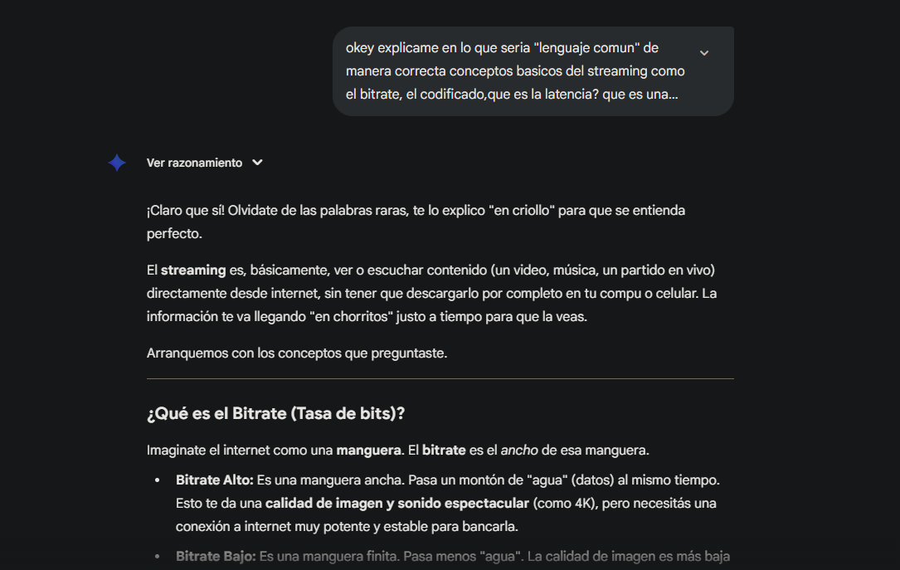
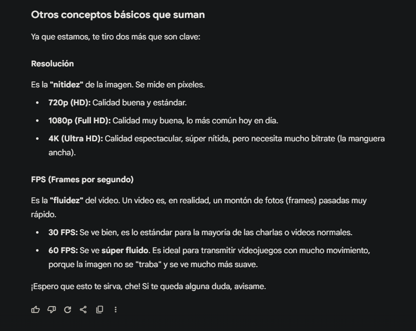

Análisis Comparativo de Componentes
| Componente | Tu Elección | Alternativas Similares | Análisis y Observaciones |
|---|---|---|---|
| CPU | Intel i5-10400F |
|
Tu elección es excelente. El i5-10400F (6 núcleos / 12 hilos) es muy potente para su precio... Fuente: Hardware Unboxed (YouTube) - 10400F vs 3600 |
| GPU | MSI GT 730 2GB GDDR5 |
|
Este es el punto más débil. La GT 730 es una placa muy antigua (2014) solo para dar video... Fuente: TechSpot - GeForce GT 1030 Review |
| Placa Madre | Asrock H510M-HDV/M.2 |
|
Elección correcta. Es una placa madre de entrada... La elegida está perfecta porque **incluye un slot M.2**. Fuente: Hard Zone (Artículo que explica M.2 vs SATA) |
| RAM | 16GB (2x8GB) DDR4 3200MHz |
|
Perfecto. 16GB (2x8GB) es el "punto dulce" para gaming y streaming... Fuente: Hardware Unboxed (YouTube) - 16GB vs 32GB (2024) |
| Almacenamiento | SSD 480GB Patriot (SATA) |
|
Buena elección, pero se puede mejorar. Elegiste un SSD SATA. Tu placa madre soporta NVMe M.2... Fuente: Hard Zone - ¿SSD SATA o un NVMe? |
| Fuente (PSU) | 650W 80+ Bronze (Solarmax) |
|
Potencia excesiva, marca dudosa. Tu PC no consume ni 200W con esa GPU... Fuente: Cultists Network - PSU Tier List |
Imagenes de IA
Capturas de la tabla comparativa generada con IA (cumpliendo punto 2 del TP):
Explicacion general de los terminos del streamming
Capturas de la explicación de conceptos de streaming (cumpliendo punto 3 del TP):

